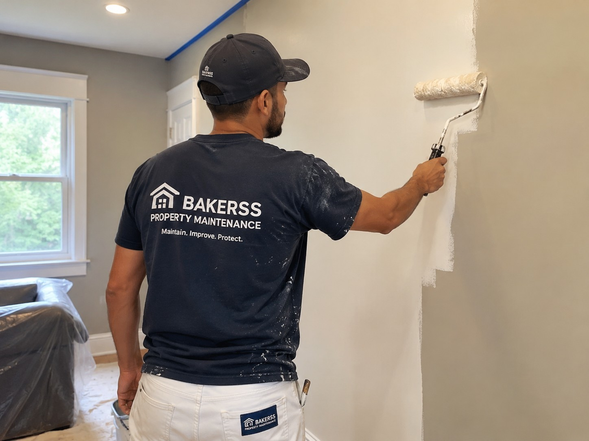

Painting Services in Myrtle Beach, Murrells Inlet & Horry County, SC
Professional interior and exterior painting for coastal homes and vacation rentals. Salt-air deterioration, coastal humidity, and mold prevention require the right products and proper prep. Veteran owned, licensed and insured.

Silo: Interior & Specialized
Painting for Coastal Horry County Properties
Painting a coastal South Carolina property is not the same as painting an inland home. Salt air attacks exterior paint surfaces aggressively, causing peeling, chalking, and fading significantly faster than in non-coastal environments. Coastal humidity promotes mildew growth under paint films. UV exposure from the low-latitude sun bleaches colors rapidly without proper paint selection.
Bakerss painting services use products and preparation methods appropriate for Horry County's coastal climate. Proper surface cleaning, priming, and moisture-resistant paint formulations are the difference between a paint job that lasts two years and one that lasts ten. We do the job right, the first time.
What Our Painting Service Includes
- ✓ Interior room painting — walls, ceilings, and trim
- ✓ Exterior house painting with salt-air rated materials
- ✓ Proper surface preparation — cleaning, sanding, and priming
- ✓ Caulking and crack repair before painting
- ✓ Mildew and mold treatment before exterior painting
- ✓ Pressure washing exterior before painting
- ✓ Touch-up and spot painting for rental refreshes
- ✓ Vacation rental interior refresh between seasons
- ✓ Color consultation for coastal aesthetics
- ✓ Clean, neat jobsite — furniture moved and protected
Coastal Considerations in Horry County
- ✓ Salt-air deterioration — exterior paint near the coast must be specifically rated for salt air or it will fail rapidly
- ✓ Coastal humidity — moisture-resistant primers and paints are essential to prevent bubbling and peeling in humid coastal climates
- ✓ Mold prevention — mildewcide additives in paint formulations are standard practice for Myrtle Beach properties
- ✓ UV bleaching — coastal UV exposure is intense; quality exterior paints with UV protection maintain color longer
Combine Painting With These Interior & Cleaning
Keep your property completely maintained with these complementary services — all from one vendor:
🧹 Interior Cleaning
Clean before and after painting for a fully refreshed rental or residential interior.
View Interior Cleaning →🏖️ Airbnb Cleaning
Combine a seasonal paint refresh with ongoing turnover cleaning for your vacation rental.
View Airbnb Cleaning →✨ Epoxy Flooring
Fresh paint plus new epoxy floors — complete interior transformation for homes and rentals.
View Epoxy Flooring →Painting by Location
Painting Across Horry County — By City
Painting in Myrtle Beach, SC
Myrtle Beach homes and vacation rentals experience rapid exterior paint degradation from salt air and coastal UV. We use proper coastal materials and prep to maximize paint longevity.
Myrtle Beach Services →Painting in Murrells Inlet, SC
Murrells Inlet waterfront properties face some of the highest salt air and humidity exposure in Horry County. Our painting process specifically addresses the corrosive environment near the marsh and ocean.
Murrells Inlet Services →Painting in Surfside Beach, SC
Surfside Beach residential and vacation rental painting requires humidity-resistant products and thorough surface prep to achieve lasting results in this coastal Family Beach community.
Surfside Beach Services →Painting in Garden City, SC
Garden City oceanfront properties are among the most demanding environments for exterior painting in South Carolina. We use premium salt-air rated materials and meticulous preparation for lasting results.
Garden City Services →Painting in Horry County, SC
We paint properties throughout Horry County — from the most exposed oceanfront homes to inland residences with more forgiving conditions. Proper materials and prep are our standard everywhere.
Horry County Services →Common Questions
Painting FAQ — Myrtle Beach & Horry County
Get Professional Painting in Myrtle Beach — Salt-Air Rated Materials
Serving Myrtle Beach, Murrells Inlet, Surfside Beach, Garden City, and all of Horry County. The right products, the right prep, and lasting results for coastal properties.